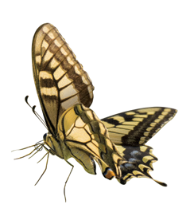

여덟 동물을 ‘날개가 있는가?’로 분류했다. ‘그렇다’ 무리에 함께 들어가는 두 동물은?
참새와 나비에게 날개가 있습니다. 붕어와 참돔의 몸 옆에 있는 부분은 지느러미입니다.
동물의 몸을 자세히 관찰하고, 같은 기준으로 여덟 동물을 빠짐없이 나눠 보세요.

확대 후 사진을 끌거나 방향키로 옮겨 보세요.
동물 카드를 누르면 크게 볼 수 있습니다. 사진 속 크기는 실제 동물의 크기와 다릅니다.
참새와 나비에게 날개가 있습니다. 붕어와 참돔의 몸 옆에 있는 부분은 지느러미입니다.
토끼와 호랑이는 날개가 없지만 다리가 있습니다. 참새와 나비는 두 기준 모두 ‘그렇다’에 들어갑니다.
붕어와 참돔은 지느러미가 있고 나머지 여섯 동물은 지느러미가 없습니다. 꼬리는 토끼·호랑이·참새·뱀 등에도 있습니다.
스스로 이동해도 다리가 없을 수 있습니다. 뱀과 지렁이는 다리 없이 몸을 움직여 이동하므로 두 카드 모두 ‘아니다’에 넣습니다.